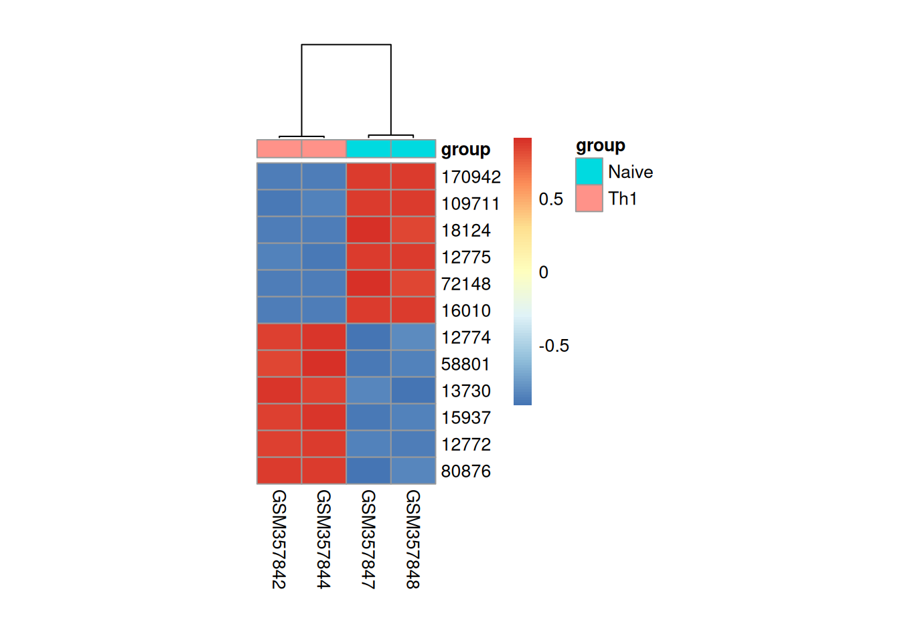

Last updated: 2023-02-01
Checks: 7 0
Knit directory: muse/
This reproducible R Markdown analysis was created with workflowr (version 1.7.0). The Checks tab describes the reproducibility checks that were applied when the results were created. The Past versions tab lists the development history.
Great! Since the R Markdown file has been committed to the Git repository, you know the exact version of the code that produced these results.
Great job! The global environment was empty. Objects defined in the global environment can affect the analysis in your R Markdown file in unknown ways. For reproduciblity it’s best to always run the code in an empty environment.
The command set.seed(20200712) was run prior to running
the code in the R Markdown file. Setting a seed ensures that any results
that rely on randomness, e.g. subsampling or permutations, are
reproducible.
Great job! Recording the operating system, R version, and package versions is critical for reproducibility.
Nice! There were no cached chunks for this analysis, so you can be confident that you successfully produced the results during this run.
Great job! Using relative paths to the files within your workflowr project makes it easier to run your code on other machines.
Great! You are using Git for version control. Tracking code development and connecting the code version to the results is critical for reproducibility.
The results in this page were generated with repository version fb91538. See the Past versions tab to see a history of the changes made to the R Markdown and HTML files.
Note that you need to be careful to ensure that all relevant files for
the analysis have been committed to Git prior to generating the results
(you can use wflow_publish or
wflow_git_commit). workflowr only checks the R Markdown
file, but you know if there are other scripts or data files that it
depends on. Below is the status of the Git repository when the results
were generated:
Ignored files:
Ignored: .Rhistory
Ignored: .Rproj.user/
Ignored: r_packages_4.1.2/
Ignored: r_packages_4.2.0/
Untracked files:
Untracked: analysis/cell_ranger.Rmd
Untracked: analysis/tss_xgboost.Rmd
Untracked: data/HG00702_SH089_CHSTrio.chr1.vcf.gz
Untracked: data/HG00702_SH089_CHSTrio.chr1.vcf.gz.tbi
Untracked: data/ncrna_NONCODE[v3.0].fasta.tar.gz
Untracked: data/ncrna_noncode_v3.fa
Note that any generated files, e.g. HTML, png, CSS, etc., are not included in this status report because it is ok for generated content to have uncommitted changes.
These are the previous versions of the repository in which changes were
made to the R Markdown (analysis/fgsea.Rmd) and HTML
(docs/fgsea.html) files. If you’ve configured a remote Git
repository (see ?wflow_git_remote), click on the hyperlinks
in the table below to view the files as they were in that past version.
| File | Version | Author | Date | Message |
|---|---|---|---|---|
| Rmd | fb91538 | Dave Tang | 2023-02-01 | fgsea example data |
From the original paper describing the Gene Set Enrichment Analysis (GSEA):
The goal of GSEA is to determine whether members of a gene set S tend to occur toward the top (or bottom) of the list L, in which case the gene set is correlated with the phenotypic class distinction.
First install fgsea.
if (!require("BiocManager", quietly = TRUE))
install.packages("BiocManager")
if (!require("fgsea", quietly = TRUE))
BiocManager::install("fgsea")
library(fgsea)The example pathways are packaged with fgsea and can be
loaded with data(). The example pathways are stored in a
list.
data("examplePathways", package = "fgsea")
class(examplePathways)[1] "list"There are 1457 example pathways.
length(examplePathways)[1] 1457The first pathway 1221633_Meiotic_Synapsis contains Entrez Gene IDs that belong to this gene set.
examplePathways[1]$`1221633_Meiotic_Synapsis`
[1] "12189" "13006" "15077" "15078" "15270" "15512"
[7] "16905" "16906" "19357" "20842" "20843" "20957"
[13] "20962" "21749" "21750" "22196" "23856" "24061"
[19] "28113" "50878" "56739" "57321" "64009" "66654"
[25] "69386" "71846" "74075" "77053" "94244" "97114"
[31] "97122" "97908" "101185" "140557" "223697" "260423"
[37] "319148" "319149" "319150" "319151" "319152" "319153"
[43] "319154" "319155" "319156" "319157" "319158" "319159"
[49] "319160" "319161" "319565" "320332" "320558" "326619"
[55] "326620" "360198" "497652" "544973" "625328" "667250"
[61] "100041230" "102641229" "102641751" "102642045"The gene ranks are also packaged with fgsea but we will
re-generate the ranks based on the author’s
code to see how the ranks were created. Several other Bioconductor
packages are required.
bioc_pac <- c("GEOquery", "limma", "org.Mm.eg.db")
cran_pac <- c("data.table", "pheatmap")
install_pac <- function(x, repo){
if (!require(x, quietly = TRUE, character.only = TRUE)){
if(repo == "bioc"){
BiocManager::install(x, character.only = TRUE)
} else if (repo == "cran"){
install.packages(x, character.only = TRUE)
} else {
stop("Unknown repo")
}
}
}
sapply(bioc_pac, install_pac, repo = "bioc")
Attaching package: 'BiocGenerics'The following objects are masked from 'package:stats':
IQR, mad, sd, var, xtabsThe following objects are masked from 'package:base':
anyDuplicated, aperm, append, as.data.frame, basename, cbind,
colnames, dirname, do.call, duplicated, eval, evalq, Filter, Find,
get, grep, grepl, intersect, is.unsorted, lapply, Map, mapply,
match, mget, order, paste, pmax, pmax.int, pmin, pmin.int,
Position, rank, rbind, Reduce, rownames, sapply, setdiff, sort,
table, tapply, union, unique, unsplit, which.max, which.minWelcome to Bioconductor
Vignettes contain introductory material; view with
'browseVignettes()'. To cite Bioconductor, see
'citation("Biobase")', and for packages 'citation("pkgname")'.Setting options('download.file.method.GEOquery'='auto')Setting options('GEOquery.inmemory.gpl'=FALSE)
Attaching package: 'limma'The following object is masked from 'package:BiocGenerics':
plotMA
Attaching package: 'S4Vectors'The following objects are masked from 'package:base':
expand.grid, I, unname$GEOquery
NULL
$limma
NULL
$org.Mm.eg.db
NULLsapply(cran_pac, install_pac, repo = "cran")
Attaching package: 'data.table'The following object is masked from 'package:IRanges':
shiftThe following objects are masked from 'package:S4Vectors':
first, second$data.table
NULL
$pheatmap
NULLLoad packages.
library(GEOquery)
library(limma)
library(org.Mm.eg.db)
library(data.table)
# for collapseBy
source("https://raw.githubusercontent.com/assaron/r-utils/master/R/exprs.R")Download mouse microarray data.
gse14308 <- getGEO("GSE14308")[[1]]Found 1 file(s)GSE14308_series_matrix.txt.gzAdd condition to the phenotypic data.
pData(gse14308)$condition <- sub("-.*$", "", gse14308$title)
pData(gse14308)[, c('platform_id', 'type', 'condition')] platform_id type condition
GSM357839 GPL1261 RNA Th2
GSM357841 GPL1261 RNA Th2
GSM357842 GPL1261 RNA Th1
GSM357843 GPL1261 RNA Th17
GSM357844 GPL1261 RNA Th1
GSM357845 GPL1261 RNA Th17
GSM357847 GPL1261 RNA Naive
GSM357848 GPL1261 RNA Naive
GSM357849 GPL1261 RNA iTreg
GSM357850 GPL1261 RNA iTreg
GSM357852 GPL1261 RNA nTreg
GSM357853 GPL1261 RNA nTregfData retrieves information on features.
feature_dat <- fData(gse14308)
colnames(feature_dat) [1] "ID" "GB_ACC"
[3] "SPOT_ID" "Species Scientific Name"
[5] "Annotation Date" "Sequence Type"
[7] "Sequence Source" "Target Description"
[9] "Representative Public ID" "Gene Title"
[11] "Gene Symbol" "ENTREZ_GENE_ID"
[13] "RefSeq Transcript ID" "Gene Ontology Biological Process"
[15] "Gene Ontology Cellular Component" "Gene Ontology Molecular Function"The collapseBy function is sourced from exprs.R
and the source is shown below.
collapseBy_ <- function(es, factor, FUN=median) {
ranks <- apply(exprs(es), 1, FUN)
t <- data.frame(f=factor, i=seq_along(ranks), r=ranks)
t <- t[order(t$r, decreasing=T), ]
keep <- t[!duplicated(t$f) & !is.na(t$f),]$i
res <- es[keep, ]
fData(res)$origin <- rownames(res)
rownames(res) <- factor[keep]
res
}ranks contains the median probe intensity.
ranks <- apply(exprs(gse14308), 1, median)
head(ranks) 1415670_at 1415671_at 1415672_at 1415673_at 1415674_a_at 1415675_at
3324.740 4933.035 11202.750 3239.865 4007.050 1830.655 The ENTREZ_GENE_ID, index, and median get saved into a
data frame. (I’ve used my_df here because t is
the name of the transpose function.) The data frame is then ordered from
highest intensity to lowest.
my_df <- data.frame(
f=fData(gse14308)$ENTREZ_GENE_ID,
i=seq_along(ranks),
r=ranks
)
my_df <- my_df[order(my_df$r, decreasing=TRUE), ]
head(my_df) f i r
1438859_x_at 20090 23165 99737.85
1454859_a_at 65019 /// 100044627 /// 100862455 39154 99078.75
1416404_s_at 20055 /// 100039355 /// 100862433 735 97947.30
1455485_x_at 22121 39780 97510.75
1422475_a_at 20091 6781 97177.05
1435873_a_at 22121 /// 100504632 20179 96558.85A vector called keep is created to keep only rows with
non-duplicated and non-missing Entrez Gene IDs.
keep <- my_df[!duplicated(my_df$f) & !is.na(my_df$f),]$i
length(keep)[1] 21603Finally, keep is used to subset the data;
origin is created to store the original probe IDs before
replacing the row names with Entrez Gene IDs.
res <- gse14308[keep, ]
fData(res)$origin <- rownames(res)
rownames(res) <- fData(gse14308)$ENTREZ_GENE_ID[keep]
resExpressionSet (storageMode: lockedEnvironment)
assayData: 21603 features, 12 samples
element names: exprs
protocolData: none
phenoData
sampleNames: GSM357839 GSM357841 ... GSM357853 (12 total)
varLabels: title geo_accession ... condition (34 total)
varMetadata: labelDescription
featureData
featureNames: 20090 65019 /// 100044627 /// 100862455 ... 194227
(21603 total)
fvarLabels: ID GB_ACC ... origin (17 total)
fvarMetadata: Column Description labelDescription
experimentData: use 'experimentData(object)'
pubMedIds: 19144320
Annotation: GPL1261 Now that we know what collapseBy does, we can use
it.
es <- collapseBy(gse14308, fData(gse14308)$ENTREZ_GENE_ID, FUN=median)
esExpressionSet (storageMode: lockedEnvironment)
assayData: 21603 features, 12 samples
element names: exprs
protocolData: none
phenoData
sampleNames: GSM357839 GSM357841 ... GSM357853 (12 total)
varLabels: title geo_accession ... condition (34 total)
varMetadata: labelDescription
featureData
featureNames: 20090 65019 /// 100044627 /// 100862455 ... 194227
(21603 total)
fvarLabels: ID GB_ACC ... origin (17 total)
fvarMetadata: Column Description labelDescription
experimentData: use 'experimentData(object)'
pubMedIds: 19144320
Annotation: GPL1261 Probe IDs that mapped to several Entrez Gene IDs and empty entries are removed.
es <- es[!grepl("///", rownames(es)), ]
es <- es[rownames(es) != "", ]
dim(exprs(es))[1] 20770 12Quantile normalisation is carried out.
exprs(es) <- normalizeBetweenArrays(log2(exprs(es)+1), method="quantile")A design matrix is defined.
es.design <- model.matrix(~0+condition, data=pData(es))
es.design conditioniTreg conditionNaive conditionnTreg conditionTh1
GSM357839 0 0 0 0
GSM357841 0 0 0 0
GSM357842 0 0 0 1
GSM357843 0 0 0 0
GSM357844 0 0 0 1
GSM357845 0 0 0 0
GSM357847 0 1 0 0
GSM357848 0 1 0 0
GSM357849 1 0 0 0
GSM357850 1 0 0 0
GSM357852 0 0 1 0
GSM357853 0 0 1 0
conditionTh17 conditionTh2
GSM357839 0 1
GSM357841 0 1
GSM357842 0 0
GSM357843 1 0
GSM357844 0 0
GSM357845 1 0
GSM357847 0 0
GSM357848 0 0
GSM357849 0 0
GSM357850 0 0
GSM357852 0 0
GSM357853 0 0
attr(,"assign")
[1] 1 1 1 1 1 1
attr(,"contrasts")
attr(,"contrasts")$condition
[1] "contr.treatment"A linear model is fit given the design.
fit <- lmFit(es, es.design)A contrasts matrix is used to compute contrasts using our fitted linear model. Here we’re contrasting naive T-cells to T-helper 1 cells.
makeContrasts(
conditionTh1-conditionNaive,
levels=es.design
) Contrasts
Levels conditionTh1 - conditionNaive
conditioniTreg 0
conditionNaive -1
conditionnTreg 0
conditionTh1 1
conditionTh17 0
conditionTh2 0fit2 <- contrasts.fit(
fit,
makeContrasts(
conditionTh1-conditionNaive,
levels=es.design
)
)
fit2An object of class "MArrayLM"
$coefficients
Contrasts
conditionTh1 - conditionNaive
20090 0.011485524
22121 -0.003602942
20091 0.035573263
67671 0.092303053
19241 0.013452656
20765 more rows ...
$rank
[1] 6
$assign
[1] 1 1 1 1 1 1
$qr
$qr
conditioniTreg conditionNaive conditionnTreg conditionTh1
GSM357839 -1.414214 0.000000 0.000000 0.0000000
GSM357841 0.000000 -1.414214 0.000000 0.0000000
GSM357842 0.000000 0.000000 -1.414214 0.0000000
GSM357843 0.000000 0.000000 0.000000 -1.4142136
GSM357844 0.000000 0.000000 0.000000 0.7071068
conditionTh17 conditionTh2
GSM357839 0.000000 0
GSM357841 0.000000 0
GSM357842 0.000000 0
GSM357843 0.000000 0
GSM357844 1.414214 0
7 more rows ...
$qraux
[1] 1.0 1.0 1.0 1.0 1.5 1.0
$pivot
[1] 1 2 3 4 5 6
$tol
[1] 1e-07
$rank
[1] 6
$df.residual
[1] 6 6 6 6 6
20765 more elements ...
$sigma
20090 22121 20091 67671 19241
0.03820456 0.03984248 0.05377004 0.03935491 0.03240994
20765 more elements ...
$cov.coefficients
Contrasts
Contrasts conditionTh1 - conditionNaive
conditionTh1 - conditionNaive 1
$stdev.unscaled
Contrasts
conditionTh1 - conditionNaive
20090 1
22121 1
20091 1
67671 1
19241 1
20765 more rows ...
$pivot
[1] 1 2 3 4 5 6
$genes
ID GB_ACC SPOT_ID Species Scientific Name Annotation Date
20090 1438859_x_at AV037157 Mus musculus Oct 6, 2014
22121 1455485_x_at AI324936 Mus musculus Oct 6, 2014
20091 1422475_a_at NM_016959 Mus musculus Oct 6, 2014
67671 1433472_x_at AA050777 Mus musculus Oct 6, 2014
19241 1415906_at NM_021278 Mus musculus Oct 6, 2014
Sequence Type Sequence Source
20090 Consensus sequence GenBank
22121 Consensus sequence GenBank
20091 Consensus sequence GenBank
67671 Consensus sequence GenBank
19241 Consensus sequence GenBank
Target Description
20090 gb:AV037157 /DB_XREF=gi:4856822 /DB_XREF=AV037157 /CLONE=1600022O04 /FEA=EST /CNT=10 /TID=Mm.154915.5 /TIER=Stack /STK=9 /UG=Mm.154915 /LL=20090 /UG_GENE=Rps29 /UG_TITLE=ribosomal protein S29
22121 gb:AI324936 /DB_XREF=gi:4059365 /DB_XREF=mb49d08.x1 /CLONE=IMAGE:332751 /FEA=EST /CNT=24 /TID=Mm.13020.6 /TIER=Stack /STK=12 /UG=Mm.13020 /LL=22121 /UG_GENE=Rpl13a /UG_TITLE=ribosomal protein L13a
20091 gb:NM_016959.1 /DB_XREF=gi:8394217 /GEN=Rps3a /FEA=FLmRNA /CNT=122 /TID=Mm.6957.1 /TIER=FL+Stack /STK=78 /UG=Mm.6957 /LL=20091 /DEF=Mus musculus ribosomal protein S3a (Rps3a), mRNA. /PROD=ribosomal protein S3a /FL=gb:NM_016959.1
67671 gb:AA050777 /DB_XREF=gi:1530594 /DB_XREF=mg72a01.r1 /CLONE=IMAGE:438504 /FEA=EST /CNT=215 /TID=Mm.43330.3 /TIER=Stack /STK=151 /UG=Mm.43330 /LL=67671 /UG_GENE=0610025G13Rik /UG_TITLE=RIKEN cDNA 0610025G13 gene
19241 gb:NM_021278.1 /DB_XREF=gi:10946577 /GEN=Tmsb4x /FEA=FLmRNA /CNT=360 /TID=Mm.142729.1 /TIER=FL+Stack /STK=172 /UG=Mm.142729 /LL=19241 /DEF=Mus musculus thymosin, beta 4, X chromosome (Tmsb4x), mRNA. /PROD=thymosin, beta 4, X chromosome /FL=gb:NM_021278.1 gb:BC018286.1
Representative Public ID Gene Title Gene Symbol
20090 AV037157 ribosomal protein S29 Rps29
22121 AI324936 ribosomal protein L13A Rpl13a
20091 NM_016959 ribosomal protein S3A1 Rps3a1
67671 AA050777 ribosomal protein L38 Rpl38
19241 NM_021278 thymosin, beta 4, X chromosome Tmsb4x
ENTREZ_GENE_ID
20090 20090
22121 22121
20091 20091
67671 67671
19241 19241
RefSeq Transcript ID
20090 NM_009093
22121 NM_009438
20091 NM_016959
67671 NM_001048057 /// NM_001048058 /// NM_023372 /// XM_006534007 /// XM_006534008 /// XM_006534009
19241 NM_021278 /// XM_006528759
Gene Ontology Biological Process
20090 0006412 // translation // not recorded
22121 0006351 // transcription, DNA-templated // inferred from electronic annotation /// 0006355 // regulation of transcription, DNA-templated // inferred from electronic annotation /// 0006412 // translation // inferred from electronic annotation /// 0006417 // regulation of translation // inferred from electronic annotation /// 0017148 // negative regulation of translation // inferred from direct assay /// 0017148 // negative regulation of translation // not recorded /// 0032496 // response to lipopolysaccharide // inferred from mutant phenotype /// 0032844 // regulation of homeostatic process // inferred from mutant phenotype /// 0048246 // macrophage chemotaxis // inferred from mutant phenotype /// 0060425 // lung morphogenesis // inferred from mutant phenotype /// 0071346 // cellular response to interferon-gamma // inferred from direct assay /// 0071346 // cellular response to interferon-gamma // not recorded /// 1901194 // negative regulation of formation of translation preinitiation complex // not recorded
20091 0002181 // cytoplasmic translation // not recorded /// 0006412 // translation // inferred from electronic annotation /// 0030154 // cell differentiation // inferred from electronic annotation /// 0043066 // negative regulation of apoptotic process // inferred from sequence or structural similarity /// 0097194 // execution phase of apoptosis // inferred from sequence or structural similarity
67671 0001501 // skeletal system development // inferred from mutant phenotype /// 0001501 // skeletal system development // traceable author statement /// 0001503 // ossification // inferred from mutant phenotype /// 0006412 // translation // inferred from electronic annotation /// 0006417 // regulation of translation // inferred from mutant phenotype /// 0007605 // sensory perception of sound // inferred from mutant phenotype /// 0034463 // 90S preribosome assembly // inferred from direct assay /// 0042474 // middle ear morphogenesis // inferred from mutant phenotype /// 0048318 // axial mesoderm development // inferred from mutant phenotype
19241 0007010 // cytoskeleton organization // inferred from electronic annotation /// 0014911 // positive regulation of smooth muscle cell migration // traceable author statement /// 0030036 // actin cytoskeleton organization // inferred from electronic annotation /// 0030334 // regulation of cell migration // inferred from direct assay /// 0042989 // sequestering of actin monomers // inferred from electronic annotation /// 0045893 // positive regulation of transcription, DNA-templated // traceable author statement /// 0051152 // positive regulation of smooth muscle cell differentiation // traceable author statement
Gene Ontology Cellular Component
20090 0005622 // intracellular // inferred from electronic annotation /// 0005737 // cytoplasm // not recorded /// 0005840 // ribosome // inferred from electronic annotation /// 0015935 // small ribosomal subunit // not recorded /// 0022627 // cytosolic small ribosomal subunit // not recorded /// 0030529 // ribonucleoprotein complex // inferred from electronic annotation /// 0070062 // extracellular vesicular exosome // not recorded
22121 0005576 // extracellular region // inferred from electronic annotation /// 0005634 // nucleus // not recorded /// 0005840 // ribosome // inferred from electronic annotation /// 0015934 // large ribosomal subunit // inferred from electronic annotation /// 0016020 // membrane // inferred from electronic annotation /// 0022625 // cytosolic large ribosomal subunit // not recorded /// 0030529 // ribonucleoprotein complex // inferred from direct assay /// 0030529 // ribonucleoprotein complex // not recorded /// 0097452 // GAIT complex // inferred from direct assay /// 0097452 // GAIT complex // not recorded
20091 0005622 // intracellular // inferred from electronic annotation /// 0005634 // nucleus // inferred from direct assay /// 0005737 // cytoplasm // inferred from electronic annotation /// 0005829 // cytosol // inferred from direct assay /// 0005840 // ribosome // inferred from electronic annotation /// 0022627 // cytosolic small ribosomal subunit // not recorded /// 0030529 // ribonucleoprotein complex // not recorded
67671 0005622 // intracellular // inferred from electronic annotation /// 0005840 // ribosome // inferred from electronic annotation /// 0022625 // cytosolic large ribosomal subunit // not recorded /// 0030529 // ribonucleoprotein complex // inferred from electronic annotation /// 0033291 // eukaryotic 80S initiation complex // inferred from direct assay
19241 0005634 // nucleus // inferred from direct assay /// 0005737 // cytoplasm // inferred from electronic annotation /// 0005829 // cytosol // inferred from direct assay /// 0005856 // cytoskeleton // inferred from electronic annotation
Gene Ontology Molecular Function
20090 0003735 // structural constituent of ribosome // not recorded /// 0008270 // zinc ion binding // not recorded /// 0046872 // metal ion binding // inferred from electronic annotation
22121 0003676 // nucleic acid binding // inferred from electronic annotation /// 0003677 // DNA binding // inferred from electronic annotation /// 0003729 // mRNA binding // inferred from direct assay /// 0003735 // structural constituent of ribosome // inferred from electronic annotation /// 0005125 // cytokine activity // inferred from electronic annotation /// 0044822 // poly(A) RNA binding // not recorded /// 0046872 // metal ion binding // inferred from electronic annotation
20091 0003735 // structural constituent of ribosome // not recorded /// 0005515 // protein binding // inferred from physical interaction /// 0031369 // translation initiation factor binding // not recorded
67671 0003735 // structural constituent of ribosome // inferred from electronic annotation
19241 0003779 // actin binding // inferred from electronic annotation /// 0005515 // protein binding // inferred from physical interaction
origin
20090 1438859_x_at
22121 1455485_x_at
20091 1422475_a_at
67671 1433472_x_at
19241 1415906_at
20765 more rows ...
$Amean
20090 22121 20091 67671 19241
16.28272 16.27241 16.25759 16.23408 16.23061
20765 more elements ...
$method
[1] "ls"
$design
conditioniTreg conditionNaive conditionnTreg conditionTh1
GSM357839 0 0 0 0
GSM357841 0 0 0 0
GSM357842 0 0 0 1
GSM357843 0 0 0 0
GSM357844 0 0 0 1
conditionTh17 conditionTh2
GSM357839 0 1
GSM357841 0 1
GSM357842 0 0
GSM357843 1 0
GSM357844 0 0
7 more rows ...
$contrasts
Contrasts
Levels conditionTh1 - conditionNaive
conditioniTreg 0
conditionNaive -1
conditionnTreg 0
conditionTh1 1
conditionTh17 0
conditionTh2 0Finally, the differential expression analysis is carried out and the results saved. The results are ranked by limma’s moderated t-statistic.
fit2 <- eBayes(fit2)
names(topTable(fit2, adjust.method="BH", number=12000, sort.by = "B")) [1] "ID" "GB_ACC"
[3] "SPOT_ID" "Species.Scientific.Name"
[5] "Annotation.Date" "Sequence.Type"
[7] "Sequence.Source" "Target.Description"
[9] "Representative.Public.ID" "Gene.Title"
[11] "Gene.Symbol" "ENTREZ_GENE_ID"
[13] "RefSeq.Transcript.ID" "Gene.Ontology.Biological.Process"
[15] "Gene.Ontology.Cellular.Component" "Gene.Ontology.Molecular.Function"
[17] "origin" "logFC"
[19] "AveExpr" "t"
[21] "P.Value" "adj.P.Val"
[23] "B" de <- data.table(topTable(fit2, adjust.method="BH", number=12000, sort.by = "B"), keep.rownames = TRUE)
ranks <- de[order(t), list(rn, t)]
ranks rn t
1: 170942 -62.22877
2: 109711 -49.47829
3: 18124 -43.40540
4: 12775 -41.16952
5: 72148 -33.23463
---
11996: 58801 49.10222
11997: 13730 50.02863
11998: 15937 50.29120
11999: 12772 50.52651
12000: 80876 52.59930Load exampleRanks.
data("exampleRanks", package = "fgsea")
head(exampleRanks) 170942 109711 18124 12775 72148 16010
-63.33703 -49.74779 -43.63878 -41.51889 -33.26039 -32.77626 Compare with our results.
wanted <- head(names(exampleRanks))
ranks[rn %in% wanted] rn t
1: 170942 -62.22877
2: 109711 -49.47829
3: 18124 -43.40540
4: 12775 -41.16952
5: 72148 -33.23463
6: 16010 -32.38200Visualise the six most significantly down- and up-regulated genes.
library(pheatmap)
my_sample <- pData(es)$condition == "Th1" | pData(es)$condition == "Naive"
my_group <- data.frame(group = pData(es)$condition[my_sample])
row.names(my_group) <- colnames(exprs(es))[my_sample]
pheatmap(
mat = es[c(head(de[order(t), 1])$rn, tail(de[order(t), 1])$rn), my_sample],
annotation_col = my_group,
cluster_rows = FALSE,
cellwidth=25,
cellheight=15,
scale = "row"
)
The following section is based on the fgsea
tutorial but with my elaborations. The pathways are stored in
examplePathways and the ranked gene list in
exampleRanks.
TBC.
sessionInfo()R version 4.2.0 (2022-04-22)
Platform: x86_64-pc-linux-gnu (64-bit)
Running under: Ubuntu 20.04.4 LTS
Matrix products: default
BLAS: /usr/lib/x86_64-linux-gnu/openblas-pthread/libblas.so.3
LAPACK: /usr/lib/x86_64-linux-gnu/openblas-pthread/liblapack.so.3
locale:
[1] LC_CTYPE=en_US.UTF-8 LC_NUMERIC=C
[3] LC_TIME=en_US.UTF-8 LC_COLLATE=en_US.UTF-8
[5] LC_MONETARY=en_US.UTF-8 LC_MESSAGES=en_US.UTF-8
[7] LC_PAPER=en_US.UTF-8 LC_NAME=C
[9] LC_ADDRESS=C LC_TELEPHONE=C
[11] LC_MEASUREMENT=en_US.UTF-8 LC_IDENTIFICATION=C
attached base packages:
[1] stats4 stats graphics grDevices utils datasets methods
[8] base
other attached packages:
[1] pheatmap_1.0.12 data.table_1.14.6 org.Mm.eg.db_3.16.0
[4] AnnotationDbi_1.60.0 IRanges_2.32.0 S4Vectors_0.36.1
[7] limma_3.54.1 GEOquery_2.66.0 Biobase_2.58.0
[10] BiocGenerics_0.44.0 fgsea_1.24.0 BiocManager_1.30.19
[13] workflowr_1.7.0
loaded via a namespace (and not attached):
[1] bitops_1.0-7 fs_1.6.0 bit64_4.0.5
[4] RColorBrewer_1.1-3 httr_1.4.4 rprojroot_2.0.3
[7] GenomeInfoDb_1.34.7 tools_4.2.0 bslib_0.4.2
[10] utf8_1.2.2 R6_2.5.1 DBI_1.1.3
[13] colorspace_2.1-0 withr_2.5.0 tidyselect_1.2.0
[16] processx_3.8.0 curl_5.0.0 bit_4.0.5
[19] compiler_4.2.0 git2r_0.31.0 cli_3.6.0
[22] xml2_1.3.3 sass_0.4.5 scales_1.2.1
[25] readr_2.1.3 callr_3.7.3 stringr_1.5.0
[28] digest_0.6.31 R.utils_2.12.2 rmarkdown_2.20
[31] XVector_0.38.0 pkgconfig_2.0.3 htmltools_0.5.4
[34] highr_0.10 fastmap_1.1.0 rlang_1.0.6
[37] rstudioapi_0.14 RSQLite_2.2.20 farver_2.1.1
[40] jquerylib_0.1.4 generics_0.1.3 jsonlite_1.8.4
[43] BiocParallel_1.32.5 R.oo_1.25.0 dplyr_1.1.0
[46] RCurl_1.98-1.10 magrittr_2.0.3 GenomeInfoDbData_1.2.9
[49] Matrix_1.5-3 Rcpp_1.0.10 munsell_0.5.0
[52] fansi_1.0.4 R.methodsS3_1.8.2 lifecycle_1.0.3
[55] stringi_1.7.12 whisker_0.4.1 yaml_2.3.7
[58] zlibbioc_1.44.0 grid_4.2.0 blob_1.2.3
[61] parallel_4.2.0 promises_1.2.0.1 crayon_1.5.2
[64] lattice_0.20-45 Biostrings_2.66.0 cowplot_1.1.1
[67] hms_1.1.2 KEGGREST_1.38.0 knitr_1.42
[70] ps_1.7.2 pillar_1.8.1 codetools_0.2-18
[73] fastmatch_1.1-3 glue_1.6.2 evaluate_0.20
[76] getPass_0.2-2 png_0.1-8 vctrs_0.5.2
[79] tzdb_0.3.0 httpuv_1.6.8 gtable_0.3.1
[82] purrr_1.0.1 tidyr_1.3.0 cachem_1.0.6
[85] ggplot2_3.4.0 xfun_0.36 later_1.3.0
[88] tibble_3.1.8 memoise_2.0.1 ellipsis_0.3.2